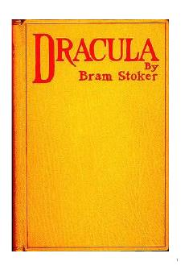

DBram Stokerning jahon adabiyotidagi eng mashhur gotik qo'rquv romani.
Bram Stoker qalamiga mansub ushbu mashhur asar jahon adabiyotidagi eng taniqli qo'rquv va gotik romanlardan biri hisoblanadi. Kitobda Transilvaniya grafi Drakulaning hayoti, uning qorong'u sirlari va zamonaviy dunyo bilan to'qnashuvi haqida hikoya qilinadi. Asar vampirlar haqidagi zamonaviy tasavvurlarning shakllanishiga ulkan ta'sir ko'rsatgan.